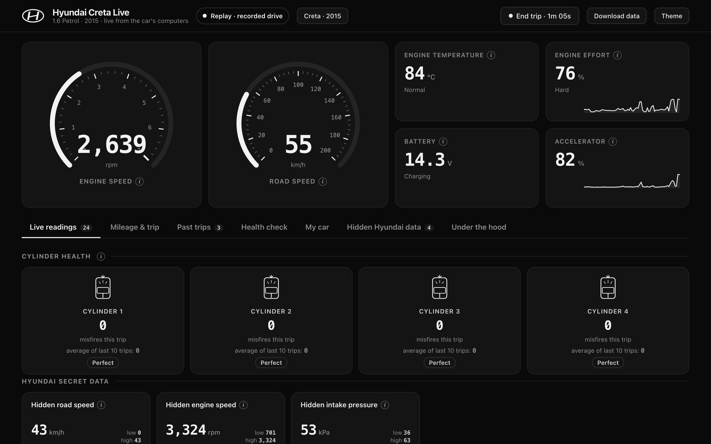
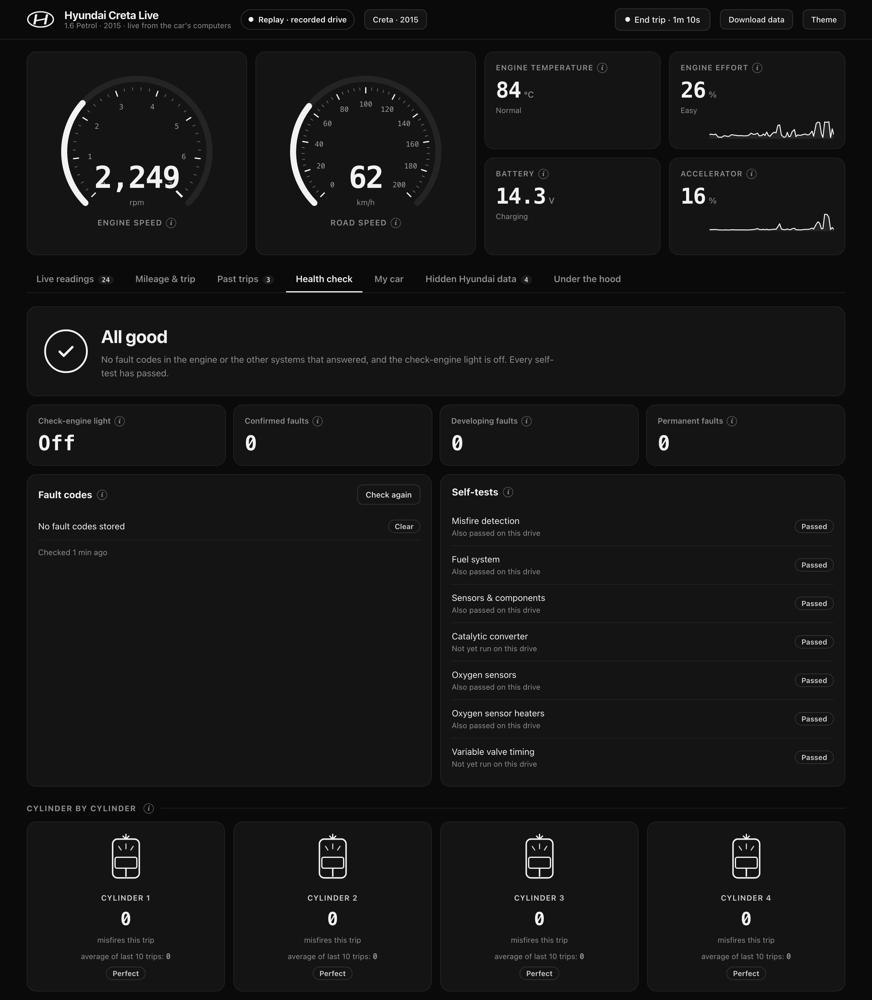
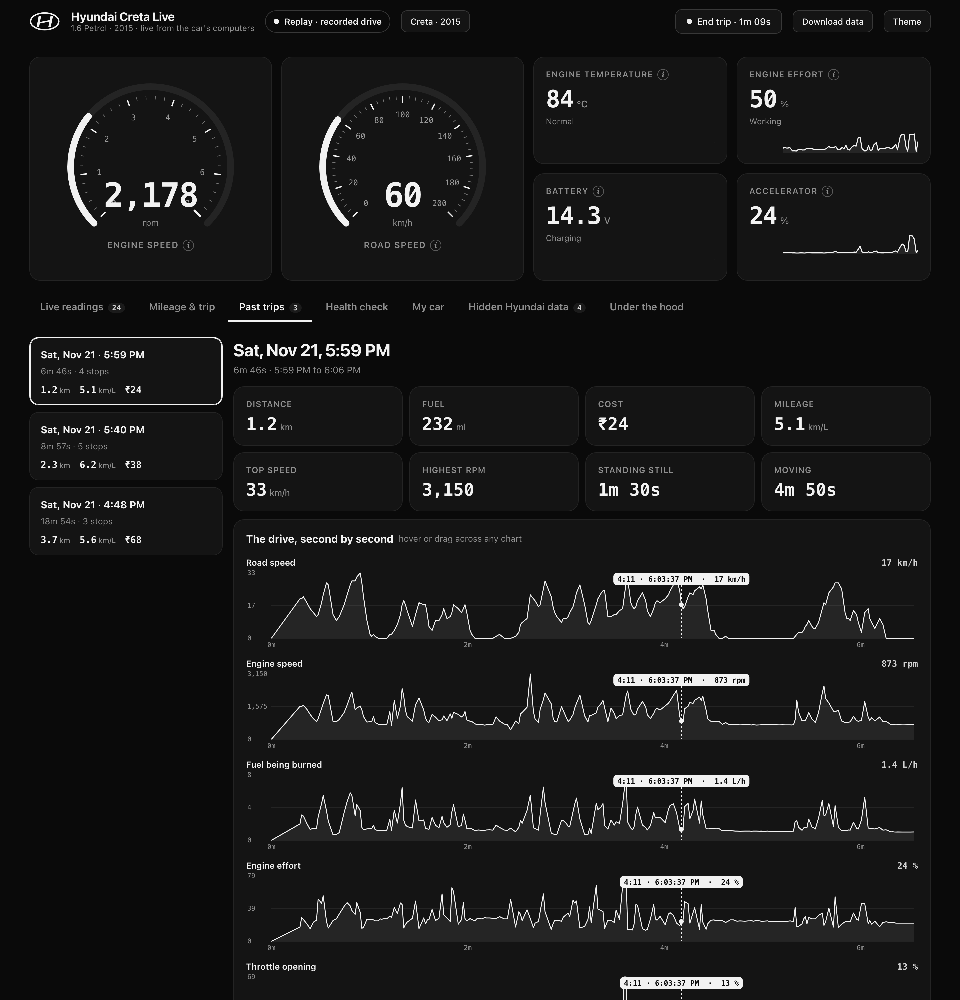
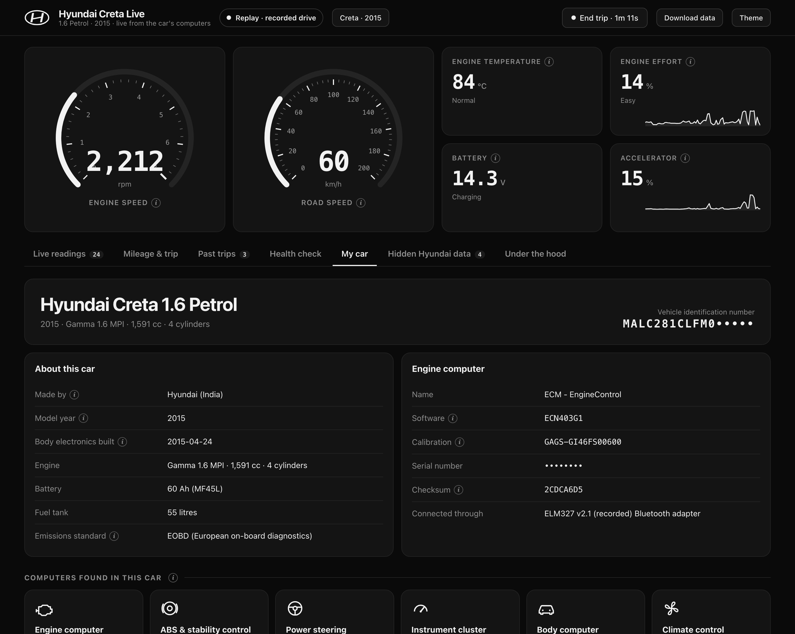
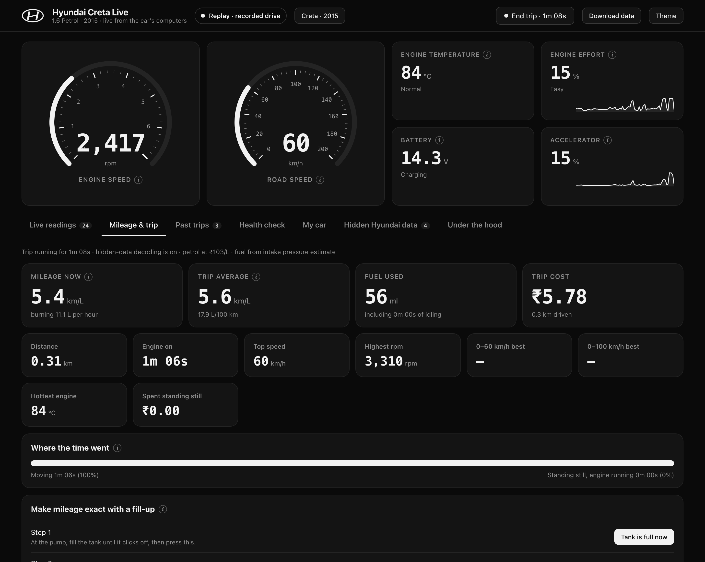
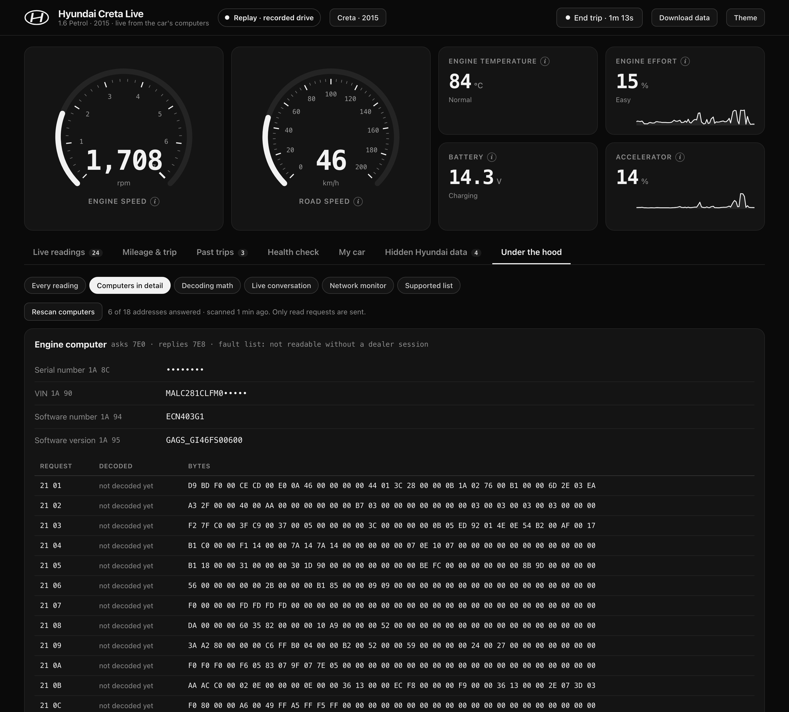
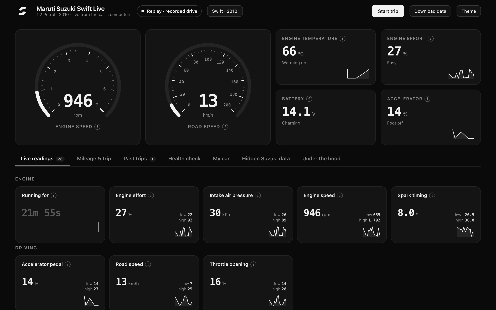

Your car has been talking all along.
Plug a ₹500 Bluetooth OBD scanner into your car and see everything its computers know: live, in plain English, on your Mac. Then crack the data the manufacturer keeps hidden.

A real drive in a 2015 Hyundai Creta, replayed. Every number on screen came from the car.
Everything a scan app shows, and everything it doesn't.
Every reading has an ⓘ that says what it is and what's normal, so anyone watching can follow along.
Live gauges
rpm, speed, temperatures, battery, throttle, fuel trims, O2 sensors, spark timing, with sparklines and highs/lows.
Cylinder health
Misfire counts for each cylinder, this trip and the last ten trips. Most scan apps never show these.
Health check
Fault codes, self-tests, and the engine's own lab report: catalyst efficiency, O2 sensor response, valve timing.
Mileage & trip cost
Live km/L, fuel used, trip cost in ₹, money spent idling, 0–60 timers, and fill-up calibration.
Past trips
Every drive saved second by second. Scrub across synced charts with exact timestamps and highlights.
Every computer
Engine, ABS, steering, cluster, body, climate: identity, build dates and their own fault lists.
Built to be read on a screen share.






Four small pieces, no cloud.
Works with any AI assistant.
Nothing is tied to one model. Everything the dashboard knows is plain JSON on your Mac, so any assistant can read it, and any AI coding tool can extend it.
Ask about your car
# live values, health, computers, decoded fields curl http://127.0.0.1:8327/api/state # every saved trip curl http://127.0.0.1:8327/api/trips
Then ask
› Is anything wrong with my engine? › Why was my last trip's mileage low? › Add a profile for my car and a gauge for oil temperature.
Two minutes to your first reading.
You need a Mac, Python 3.11+, the Xcode command line tools and any ELM327 Bluetooth adapter. No car handy? Replay mode plays back real recorded drives.
Install
git clone https://github.com/navyansh1/CAR-OBD-Dashboard-AI.git cd CAR-OBD-Dashboard-AI ./setup.sh
Run
# no car needed ./start.sh --replay # with your car (pair the adapter first) ./start.sh